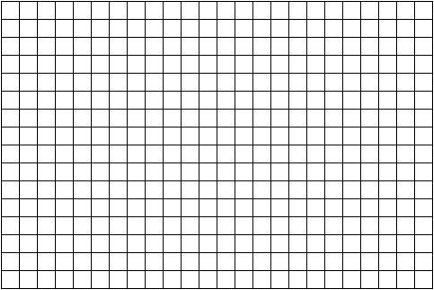

A truck hauling bags of grass seed weighs 3,900 pounds when it is empty. Each bag of seed it carries weighs 4.2 pounds. The equation for the gross weight \(W\) pounds is
\begin{equation*}
W = 3,900 + 4.2B
\end{equation*}
for \(B\) bags of grass seed. (Story also appears in 2.1 #1 & 3.2 #1)
(a)
Set up and solve an equation to determine the number of bags of grass seed being carried by the truck with gross weight of 14,500 pounds.
(b)
Do the same for a truck with gross weight 8 tons. A ton is 2,000 pounds.
2.
Is laughter really the best medicine? A study examined the impact of comedy on anxiety levels. Subjects’ anxiety levels were rated on a scale of 1 to 5 before and after the study. Levels averaged 4.3 before the study. There was no significant change in subjects in the control group. Subjects who watched the comedy videos showed a noticeable difference, and it depended on the hours of comedy watched. Anxiety levels fell an average of 0.098 (on the 1 to 5 scale) for each hour of comedy watched.
(a)
Name the variables. Anxiety is measured on a unitless scale.
(b)
Make a table showing average anxiety levels for subjects who watched comedy videos for 0 hours (control group), 2 hours, 10 hours, and 20 hours, according to these findings.
(c)
Use successive approximation to guess the approximate number of hours watching comedy needed to lower the average anxiety level below 2 (on that scale of 1 to 5).
(d)
Write an equation relating the variables.
(e)
Solve your equation to determine the exact number of hours watching comedy needed to lower the average anxiety level below 2.
3.
Lizbeth wants to send her mom truffles for Mother’s Day. It cost $\(C\) to send a box of \(T\) truffles where
\begin{equation*}
C = 1.90T+7.95
\end{equation*}
(a)
Make a table of values showing the charges for a box of 8 truffles, 12 truffles, or 30 truffles.
(b)
What are the units on 1.90 and what does it mean in the story?
(c)
What are the units on 7.95 and what does it mean in the story?
(d)
Draw a graph illustrating the cost of sending truffles. Include \(T=0\text{.}\)

(e)
If Lizbeth was charged $53.55 for the box of truffles she sent her mom, how many truffles were there? Set up and solve an equation to answer the question.
4.
The local burger restaurant had a promotion this summer. They reduced the price on a bacon double cheeseburger by 2¢ for each degree in the daily high temperature. The equation is
\begin{equation*}
B = 7.16 - 0.02H
\end{equation*}
where $\(B\) is the price of the bacon double cheeseburger and \(H\) is the daily high temperature, in °F. (Story also appears in 2.1 Exercises)
(a)
What is the usual price of a bacon double cheeseburger?
(b)
Ronald paid $5.34 for a bacon double cheeseburger on Tuesday. How hot was the temperature that day? Set up and solve an equation.
(c)
What was the high temperature on Sunday when Wendy bought a bacon double cheeseburger for only $5.70? Set up and solve an equation.
(d)
Leroy is holding out for a $5 burger. What temperature will make Leroy’s wish to come true? Set up and solve an equation.
Subsection3.1.1When you’re done ...
Check your solutions. Still confused? Work with a classmate, instructor, or tutor.
Try the Do you know questions. Not sure? Read the textbook and try again.
Make a list of key ideas and processes to remember under Don’t forget!
Do the textbook exercises and check your answers. Not sure if you are close enough? Compare answers with a classmate or ask your instructor or tutor.
Getting the wrong answers or stuck? Re-read the section and try again. If you are still stuck, work with a classmate or go to your instructor’s office hours or tutor hours.
It is normal to find some parts of exercises difficult, but if most of them are a struggle, meet with your instructor or advisor about possible strategies or support services.
Subsection3.1.2Do you know ...
The difference between solving and evaluating an equation?
Why we “do the same thing to each side” of an equation when solving?
How to solve a linear equation?
The advantages and disadvantages of solving versus successive approximation?
How to check that a solution is correct using the equation?